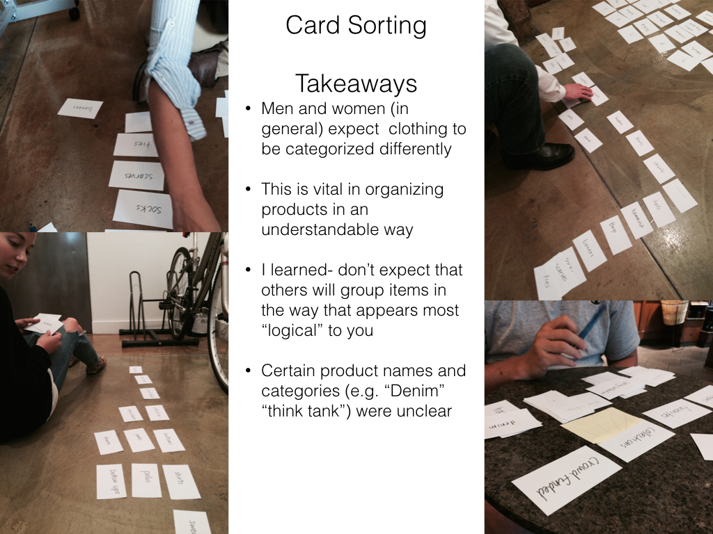

Betabrand is a clothing company based in San Francisco that carries unique and quirky products, including crowdsourced products. They have a small cult following but would like to expand their reach. Currently, their website is poorly organized, making it extremely difficult to locate products. In addition, the crowdfunding process is poorly explained and difficult to complete.
I began by assesing the usability of the site, and conducting card sorting of product categories. I also did a lot of competitive analysis of ecommerce sites.
